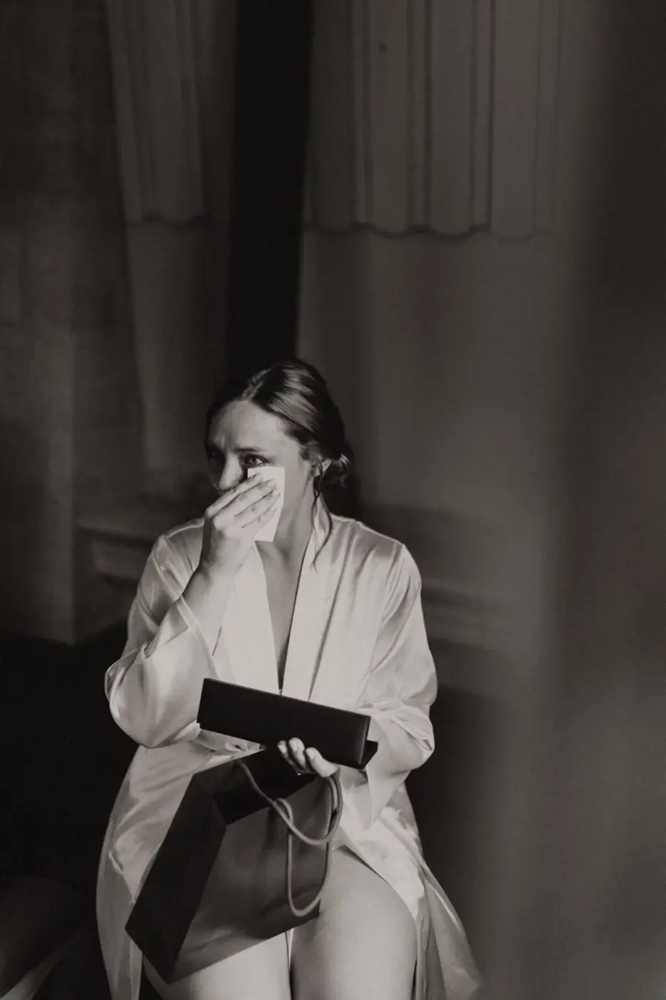
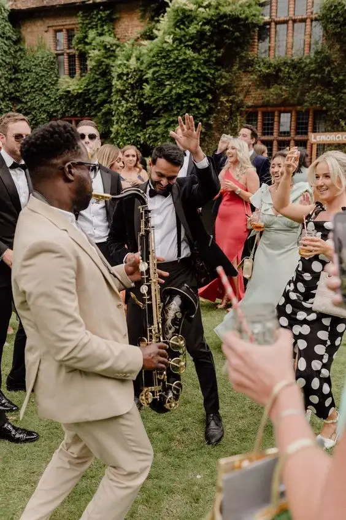
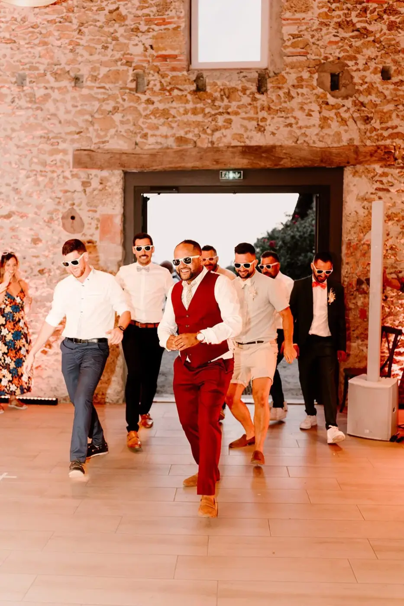
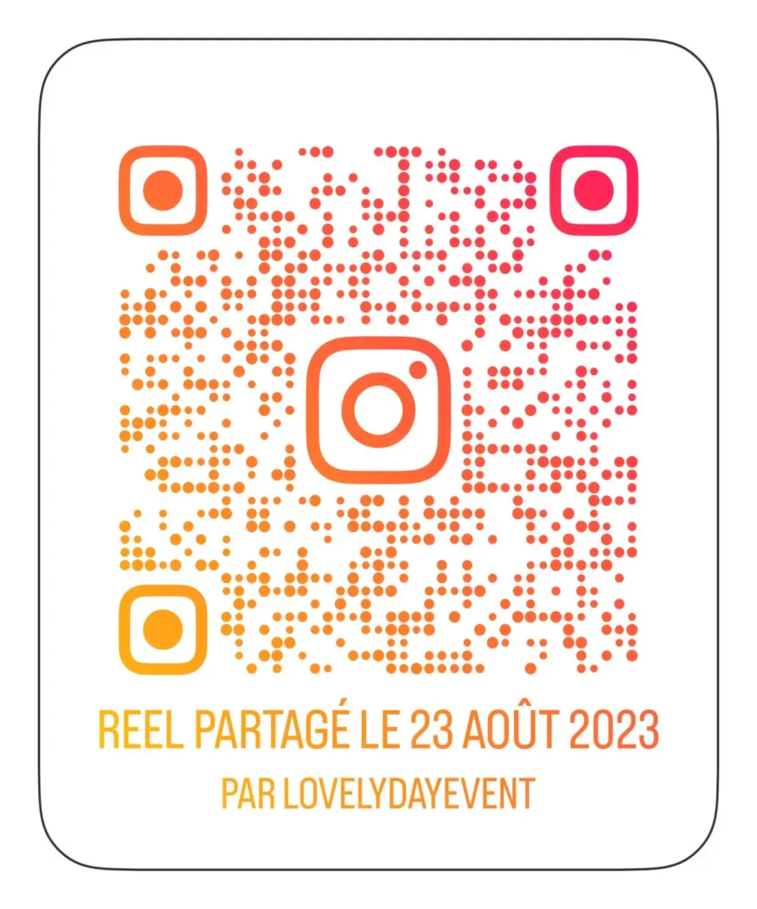
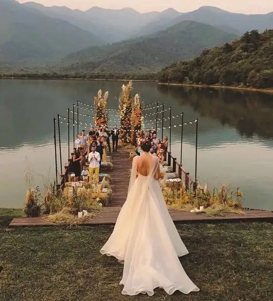
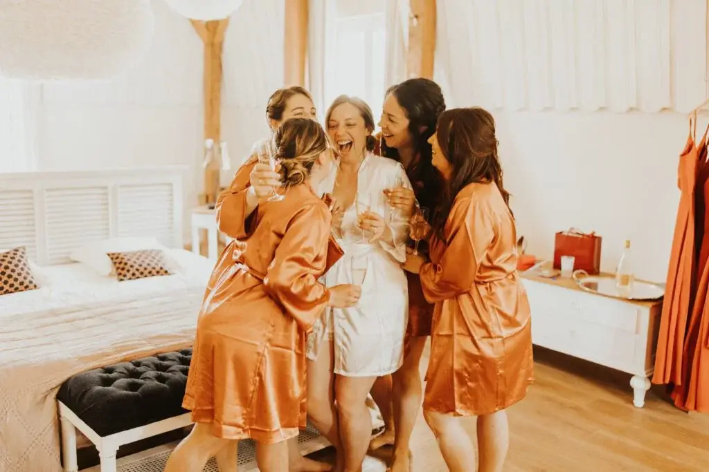
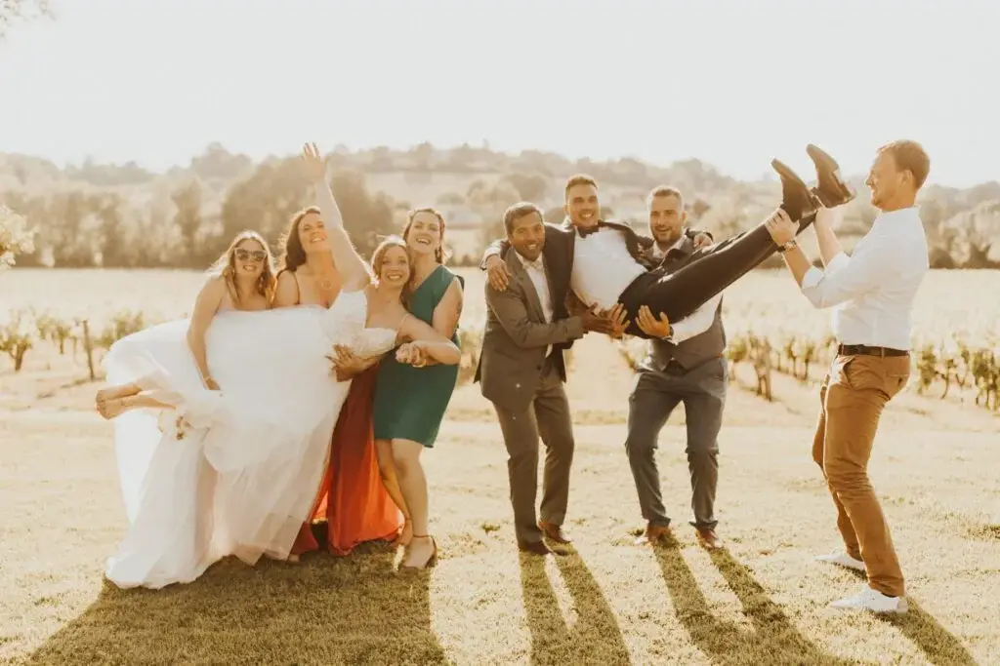
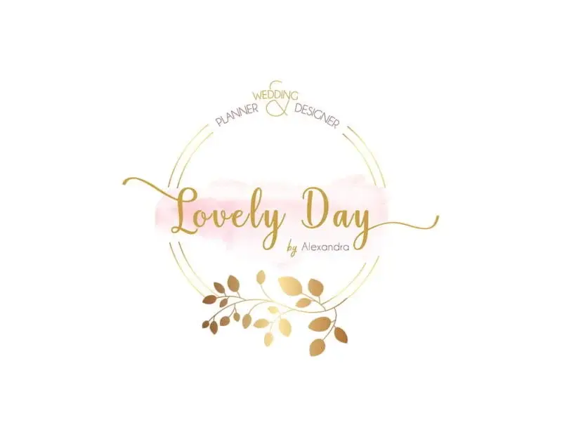

Le mariage est un événement marquant et festif où les amis et la famille se rassemblent pour célébrer l’union de deux êtres chers. Parmi les acteurs clés de cette journée exceptionnelle, les témoins jouent un rôle primordial. Ils ne sont pas seulement là pour soutenir les mariés et signer les documents officiels, mais aussi pour animer la fête et s’assurer que tout le monde passe un moment inoubliable. Les animations des témoins aux mariages sont devenues une tradition qui ajoute une touche personnelle et souvent hilarante à la célébration.
Quelles sont les différentes animations proposées par les témoins ?
Nous avons tout d’abord les discours et toasts, ce sont des éléments incontournables des animations de mariage. Ils permettent aux témoins de partager des anecdotes, des souvenirs et des vœux pour les mariés.
Les discours émouvants
Les discours émouvants sont souvent chargés de souvenirs personnels et de moments partagés avec les mariés. Ils peuvent évoquer des anecdotes touchantes de l'enfance, des aventures vécues ensemble ou des moments significatifs de la relation entre les mariés et les témoins. Ces discours créent une atmosphère de tendresse et de complicité, touchant le cœur de tous les invités.


Les discours humoristiques
En contraste, les discours humoristiques visent à détendre l'atmosphère et à faire rire l'assemblée. Ils peuvent inclure des blagues, des imitations ou des histoires embarrassantes mais bienveillantes. L'objectif est de mettre en valeur la personnalité des mariés de manière ludique et amusante, tout en restant respectueux et affectueux.
Les jeux et les activités sont aussi très fréquents lors des mariages. Organisés par les témoins, c’est une autre forme populaire d’animation. Ils permettent aux invités de participer activement et de créer des souvenirs mémorables.

Les jeux de connaissance
Les jeux de connaissance, comme le « Quizz des Mariés » ou le « Jeu des 12 Mois », sont conçus pour tester les connaissances des invités sur les mariés. Ces jeux sont interactifs et impliquent souvent des prix ou des gages pour ajouter une touche de compétition et de divertissement.
Les jeux de coordination
Les jeux de coordination, comme les courses en sac ou les relais, sont parfaits pour amener les invités à se lever et à participer physiquement. Ces jeux encouragent la camaraderie et le rire, tout en brisant la glace entre les invités qui ne se connaissent pas forcément.
Bien sûr les sketchs et scènes théâtrales sont aussi incontournables. En effet, ils permettent aux témoins de mettre en scène des moments de la vie des mariés ou des situations imaginaires, souvent avec une touche humoristique.
Les reconstitutions de souvenirs
Les reconstitutions de souvenirs sont des mini-pièces de théâtre où les témoins rejouent des moments marquants de la vie des mariés. Cela peut aller de leur première rencontre à des vacances mémorables, en passant par des événements drôles ou embarrassants. Ces sketchs sont souvent hilarants et permettent aux invités de mieux connaître les mariés.

Les parodies et impressions
Les parodies et impressions sont également très populaires. Les témoins peuvent imiter les mariés, leurs habitudes ou leurs expressions caractéristiques, souvent de manière exagérée pour accentuer l'effet comique. Ces animations sont généralement très appréciées car elles montrent la complicité entre les témoins et les mariés.
Les performances artistiques peuvent aussi être amusantes. Certaines animations peuvent prendre la forme de performances artistiques, telles que des chansons, des danses ou des numéros de magie.
Les chansons personnalisées
Les chansons personnalisées sont une manière créative et émotive de célébrer les mariés. Les témoins peuvent écrire des paroles adaptées à une mélodie connue ou composer une chanson originale qui parle des mariés et de leur histoire. Ces performances sont souvent très touchantes et restent gravées dans la mémoire des mariés.

Les danses surprises
Les danses surprises sont des chorégraphies préparées par les témoins et exécutées pendant la réception. Elles peuvent inclure des styles variés, allant des danses classiques aux danses modernes, et sont souvent interprétées avec humour et enthousiasme. Ces numéros sont une façon dynamique de faire participer les invités et d’animer la soirée.

Une animation que je recommande beaucoup sont les vidéos et montages photos.
Les montages photos
Les montages photos sont une manière nostalgique et souvent émotive de retracer l’histoire des mariés. Les témoins peuvent compiler des photos de différents moments de leur vie, depuis leur enfance jusqu’à leur rencontre et leur vie ensemble. Ces montages sont souvent accompagnés de musique et de commentaires qui ajoutent une dimension personnelle et touchante.

Les vidéos surprises
Les vidéos surprises peuvent inclure des interviews de proches, des messages de félicitations de ceux qui ne peuvent pas être présents ou des clips humoristiques mettant en scène les mariés. Ces vidéos sont projetées pendant la réception et apportent une touche de modernité et d’émotion à la célébration.
Par exemple, lors d’un de mes mariages, les témoins avaient fait une vidéo drôle avec tous les invités. Vous pouvez la visionner ci-dessous.

Pourquoi est-il important que les témoins fassent des animations ?
Cela renforce la complicité !
La création de souvenirs partagés
Les animations proposées par les témoins créent des souvenirs partagés entre les mariés et leurs proches. Ces moments de rire et d'émotion renforcent les liens et créent une atmosphère de complicité qui perdurera bien au-delà du jour du mariage.


L'expression de l'amitié
En préparant et en exécutant des animations, les témoins expriment leur amitié et leur soutien aux mariés. Ces gestes montrent l'importance de leur relation et l'affection qu'ils portent aux nouveaux époux.
Il faut bien sûr ajouter une touche personnelle !
La personnalisation des animations
Les animations conçues par les témoins sont souvent très personnalisées, basées sur des anecdotes et des souvenirs spécifiques. Cette personnalisation rend chaque mariage unique et reflète véritablement la personnalité des mariés.
L'adaptation aux préférences des mariés
Les témoins connaissent bien les goûts et les préférences des mariés, ce qui leur permet de créer des animations qui seront particulièrement appréciées. Que ce soit par le choix de la musique, le type de jeux ou le ton des discours, les témoins s’assurent que les animations correspondent parfaitement aux attentes des mariés.

Les animations facilite également l’interaction entre les invités
Briser la glace
Les animations permettent de briser la glace entre les invités qui ne se connaissent pas. En participant à des jeux ou en riant ensemble lors des discours, les invités commencent à se sentir plus à l’aise et à interagir plus librement.

Créer une ambiance conviviale
Les témoins, en animant la soirée, contribuent à créer une ambiance conviviale et chaleureuse. Leur rôle est crucial pour s’assurer que tout le monde passe un bon moment et que l’ambiance reste positive tout au long de la célébration.
Comment les témoins préparent leurs animations ?
La répartition des tâches
Pour que les animations soient réussies, une bonne planification et coordination sont nécessaires. Les témoins doivent se répartir les tâches et s'assurer que chaque animation est préparée avec soin. Cela peut inclure l'écriture de discours, la préparation de jeux ou la répétition de sketchs.
La gestion du temps
La gestion du temps est essentielle pour que les animations s'intègrent parfaitement dans le déroulement de la journée. Les témoins doivent s'assurer que chaque activité a une durée appropriée et qu'elle n'empiète pas sur d'autres moments importants de la journée.
La créativité et l'originalité
L'inspiration
Les témoins peuvent puiser leur inspiration dans de nombreux domaines : films, séries, chansons, événements passés, etc. L’important est de trouver des idées qui seront à la fois originales et adaptées aux mariés.
L’innovation
L’innovation est clé pour surprendre et divertir les invités. Les témoins peuvent introduire des éléments inattendus ou des technologies modernes pour rendre leurs animations encore plus mémorables.
L'implication des invités
L'engagement des participants
Pour que les animations soient réussies, il est important d’impliquer les invités. Les témoins peuvent solliciter des volontaires pour participer aux jeux ou aux sketchs, ou encore demander aux invités de préparer de petites surprises pour les mariés.
La collaboration
La collaboration avec les autres membres de la famille ou les amis proches peut également enrichir les animations. En travaillant ensemble, ils peuvent créer des moments encore plus spéciaux et marquants pour les mariés.
En bref, les animations des témoins aux mariages jouent un rôle crucial dans la réussite de cet événement unique. Elles apportent une touche personnelle, renforcent la complicité entre les mariés et leurs proches, et ajoutent une dimension d'amusement et de convivialité à la célébration. Par leurs discours, jeux, sketchs et performances artistiques, les témoins créent des souvenirs inoubliables et contribuent à faire de cette journée un moment véritablement magique. En planifiant soigneusement leurs interventions, en faisant preuve de créativité et en impliquant les invités, les témoins peuvent s'assurer que le mariage sera une fête mémorable et joyeuse, célébrant l'amour et l'amitié de manière authentique et touchante. Leurs efforts et leur dévouement montrent à quel point ils tiennent aux mariés, ajoutant ainsi une couche supplémentaire d'affection et de sincérité à cette journée déjà spéciale.